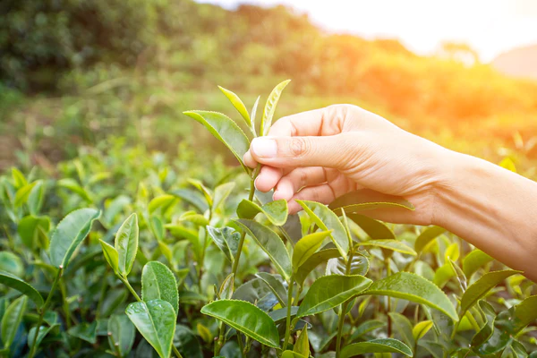

We all know the basics of quality loose leaf tea standards: Don’t buy tea in tea bags and make sure that the tea leaves are not just dust. However, there are so many standards that go into tea picking and production. While these standards also vary by tea type and variety, there are a few that hold true to most loose leaf teas.
1) The picked tea leaves should be in good shape, whole, and without tare (not broken). This tells that the tea leaves were picked with care and not just plucked quickly or by a machine.
2) For quality tea, the tea leaves should mostly adhere to the same shape and size. This is also determined by the plucking standard of a particular tea type. For example, many (but not all) high-quality teas comprise only the first buds and tea leaves. If there is a mix of large tea leaves and small, young tea leaves, this may indicate that the plucking standard wasn’t adhered to. Older, bigger tea leaves are sometimes mixed in to produce a higher quantity of tea but still keep a hefty price tag on sought-out teas.
3) Depending on the tea variety, the cultivar may actually say a lot about the tea. While some teas of the same category can be produced using different cultivars, others must stick to one cultivar to indeed be considered an authentic tea. In our recent blog post, we talked about Da Hong Pao. Nowadays, it is common to use various cultivars to produce Da Hong Pao, which is perfectly fine. However, some farmers still raise the price of their DHP saying that it is the original and authentic Big Red Robe oolong, produced only from one cultivar (Qi Dan). It may be important to inquire about the cultivar when buying tea.
4) Each tea has a particular harvest time that should be adhered to. Many top-shelf teas are harvested at the very beginning of spring, right after the last frost. There is often a window of just a week where the ideal tea leaves being harvested without over maturing from sun exposure and warmer temperatures. Tea leaves harvested at the end of spring or even during summer will generally have larger leaves. Depending on the type of tea you are buying, it is important to pay attention to harvest dates.
5) Many teas are tied to their production region. One great example of this is pu-erh, which can only be considered a true pu-erh if produced in Yunnan, China. Another example — yancha, which can only come from the Wuyi Mountains. Other locations may not be the true versions of this tea. The same thing goes for “high-mountain teas,” which may actually not be grown at high elevations at all. A tea could only be considered a high-mountain tea if it was grown at at least 3,300 feet (1000 m) above sea level. Read more: How Elevation Affects Tea Quality
6) This is another important point when talking about high-quality specialty teas. Were pesticides used? Were the leaves hand-picked? Is the tea farm sustainable? How were the tea farmers treated? This information may be harder to obtain, but it is worth venturing out and asking the appropriate questions.
7)We would like to believe that most tea vendors adhere to proper storage and packaging practices. However, this isn’t always the case. Especially when it comes to fermented tea — pu-erh, it can be quite evident when the teas weren’t stored properly. Read more. Some basic rules are: tea shouldn’t be sold in plastic bags, clear ziplocs, or glass jars. Exposure to light is not suitable for tea leaves. They may lose their vitality, taste, and aroma more quickly. Tins or opaque bags with inside lining are both excellent choices. Also, try to make sure that the lining doesn’t contain aluminum, as this may be harmful to our health and the taste of the tea.